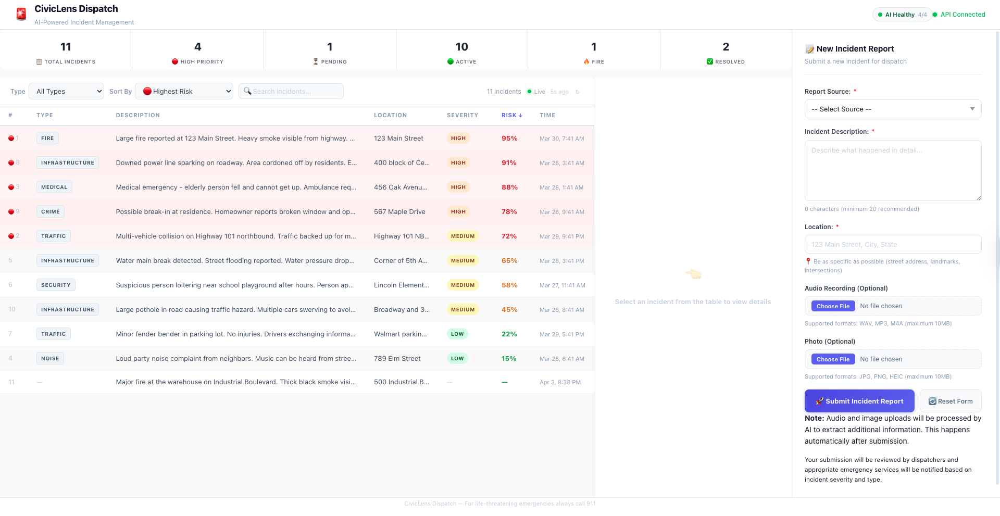
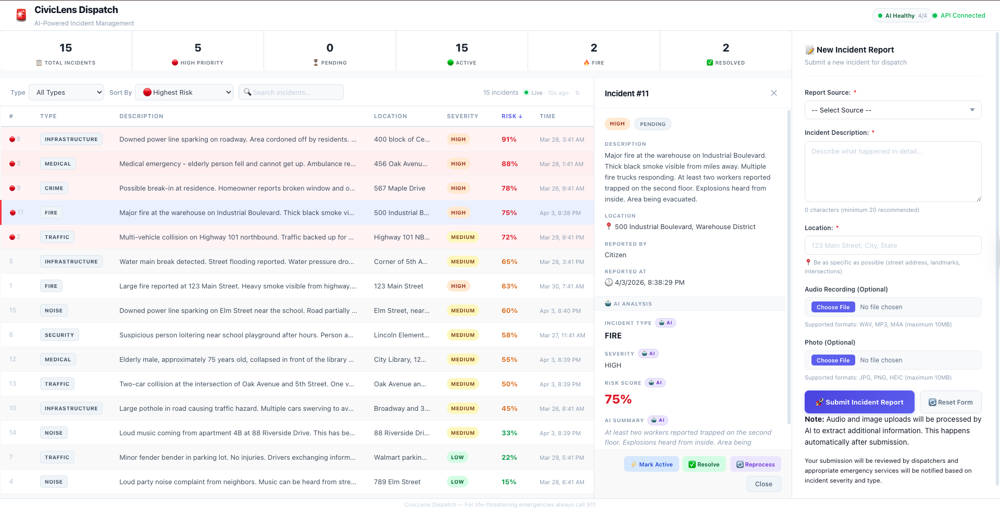
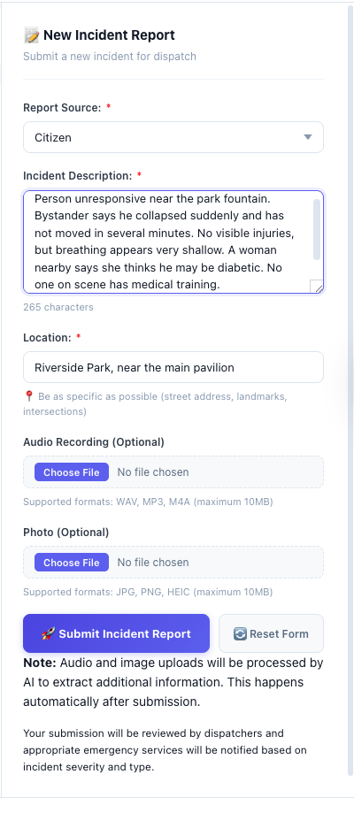
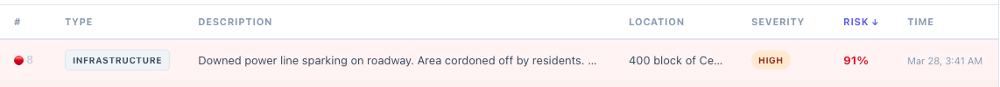

In Action
Screenshots

Dashboard — incidents sorted by AI-generated risk score
click to expand ↗

Detail panel — AI classification, risk score, and summary
click to expand ↗

Submission form — text, optional audio, optional photo
click to expand ↗

AI output — type, severity badge, and risk score auto-populated
click to expand ↗